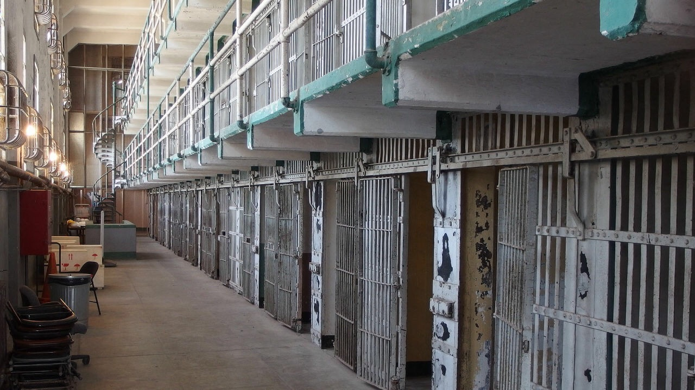

このページに書いてあることをよく読んでからマップ制作に参加してください．
新RGBY-PvPサーバーで使用するマップを制作します．テーマは刑務所です．
網走監獄みたいな広大で整った監獄をイメージしてください．
イメージ画像はこんな感じ
以下のルールを必ず守ってください．
IPはrgbybuild.dip.jp，ポートは19132です．
ホワイトリスト制にしています．入れない場合はTwitter @katsuo_r までどうぞ．
コピペ＋回転も可能なワールドエディットプラグインを用意しています．使用したい場合はOPまでご相談ください．
暫定的なやつ
| なまえ | ひとこと |
|---|---|
| Abhar1919 | ひなビタ♪ |
| Innsbluck | |
| nekonyan0325 | やよい |